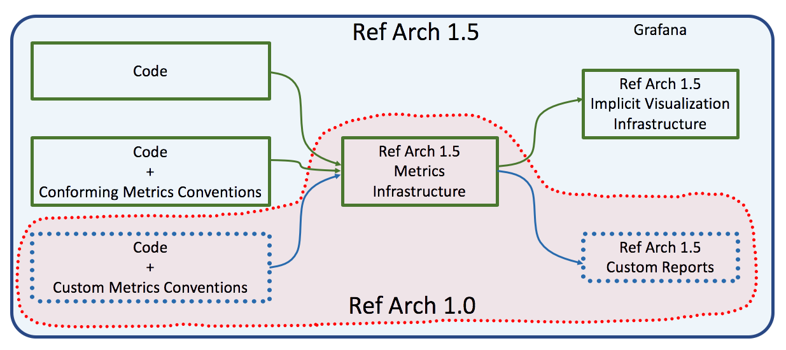
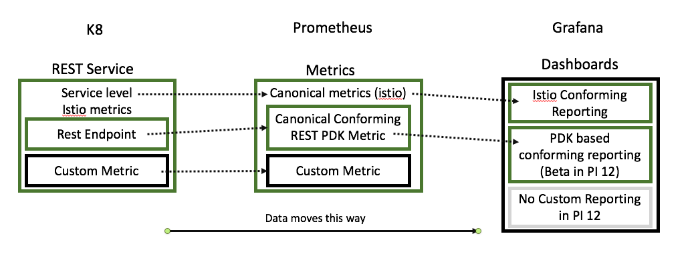
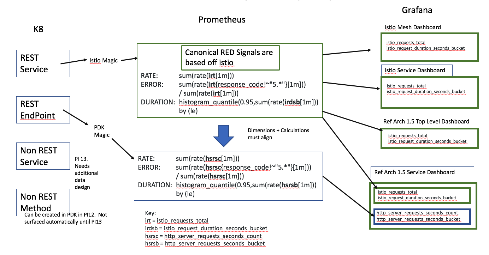

Metrics Pipeline¶
Overview¶
Metrics on Ref Arch 1.5 are a departure from the methodology than for Ref Arch 1.0. In Ref Arch 1.0 the only part of the process that was automated and standardized was the movement of metrics from a service to a store (Datadog). Teams were responsible for defining their own metrics, creating these metrics individually, defining and updating standardizations, retrofitting new metrics, creating visualizations and manually updating visualizations for any changes to these metrics.
Ref Arch 1.5 is a leap forward in that a great deal of this work is now done for you. Depending on the type of service and level of detail there may literally be no additional work other than writing your service code. Other metrics pipeline work has varying degrees of user intervention which this document will describe in more detail.
Metrics in 1.5 vs 1.0
Implicit metrics and the dashboard as a data contract.¶
Metrics that can be visualized with zero or minimal additional work will be referred to as implicit. “Zero additional work” is self-explanatory, “minimal additional work” would be adding a custom annotation that conforms to a defined standard. What makes these implicit is once generated in code, pipeline and dashboarding will pull these onto the dashboard automatically. As the dashboard is merely a UI in front of Prometheus queries implicit signals boil down to if the signals are standardized they will appear on common dashboards. If these signals are not, they won’t. As EBSCO starts to move to using the standard dashboards for NFRs, using implicit signals is the path of least resistance to rapid and efficient software development.
That said, if teams determine these signals are not sufficient they are still free to create their own custom metrics and dashboards.
Implicit metrics, more detail¶
The standardization will leverage istio’s capabilities and build out from there. As such istio 1.0 out of the box (OOTB) gives us “RED” signals (Rate, Errors, Duration) for REST based services. This is measured at the Service level. For example, given Service A with endpoints 1, 2 and 3; istio provides RED signals for Service A, but not Endpoints 1, 2, and 3. RED signals will be a black box calculation that is handed to us from istio.
The 1.0 Metrics PDK will add the ability to see implicit RED signals for endpoints 1, 2, and 3. This is done using Micrometer and some additional wiring in the PDK. Once again the signals from here are black box via Micrometer and so signal coherence between the istio based and the automatic Micrometer is not guaranteed. If that is a concern additional work may be done to validate/test this model.
Lastly teams are free to add their own metrics and pipeline signals These can persist into part of the pipeline and stored on Prometheus, or additional dashboards can be made. Note in PI 12 adhoc dashboards on Grafana has not been implemented.
Rollout¶
As stated above these capabilities are still being developed and not all capabilities will be available in PI12. Presently this is the current state of affairs:
PI12¶
Implicit RED signals on Dashboard for REST based services (implicit with istio)
Implicit RED Signals on Dashboard for REST based end points with Java PDK
Implicit RE (no Duration) on Dashboard for REST based signals with Node Express PDK (not tested yet)
Implicit Duration Quantiles to Prometheus but not Dashboard for Node Express PDK (not aligned with istio yet)
Custom Metrics to Prometheus with Java and Node Express PDKs
Beta versions of Grafana dashboards for custom implicit dashboards for Java PDK RED signals and Node Express RE Signals
High level view Metrics Flow
PI13 (candidates)¶
Implicit duration on Dashboard for REST based signals with Node Express PDK (using istio le bucketing)
Standardized pipeline components for RED signals on Non-REST services
Standardized pipeline components for RED signals on Non-REST methods
Ability for Adhoc dashboards
PI12 Pipeline Metric Mappings¶
Below is an overview of which metrics are supported at which stages for the Java PDK.
| Type of Metric | Required Infrastructure | Code that needs to be added | Primary metric names | Canonical Dimensions (labels) | Primary Dimensions (labels) | Dashboard, Alerting |
|---|---|---|---|---|---|---|
| Istio service REST | istio | None | istio_requests_total, istio_request_duration_seconds_bucket | destination_service_name, response_code, le, namespace, version | Istio Mesh, Istio Service, Istio Workload | |
| Istio service Non-REST | TBD | TBD | TBD | TBD | TBD | |
| uri/method REST | PDK | None | http_server_requests_seconds_count http_server_requests_seconds_bucket | destination_service_name, namespace, version | uri, method, exception, outcome | Ref Arch 1.5 Top Level (Beta), Ref Arch 1.5 Service (Beta) |
| Method Non-REST | PDK | @Timed Annotation | Derived from metric name + PDK: @Timed(value = "foo") yields: foo_seconds_count foo_seconds_max foo_seconds_sum foo_seconds (quantiles, .5, .9, .95, .99) |
destination_service_name, namespace, version | method, exception, class | Custom in PI12 (not recommended), Basis for non-REST RED signals at some future date. |
| Gauge | PDK | @Gauge Annotation | Derived from metric name + PDK @Gauge(name = "goo") yields: gooGauge |
destination_service_name, namespace, version | Custom |
Canonical Metrics¶
In order to maintain a cohesive pipeline metrics must be calucalted the same way in order to provide a coherent set of data. As the base signals rely on istio for metrics, and metrics in the PDK must have the same characteristics as the istio signals or we will not be able to draw meaningful conclusions
The two most important characteristics of the metrics are
The label (dimension)
The calculation
The PDKs will handle this for teams but it is important to understand.
Alignment Of Metrics In Ref Arch 1.5